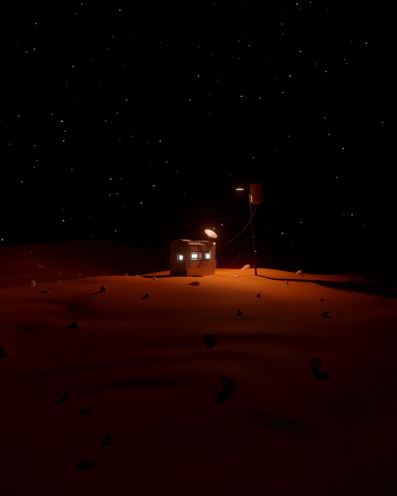
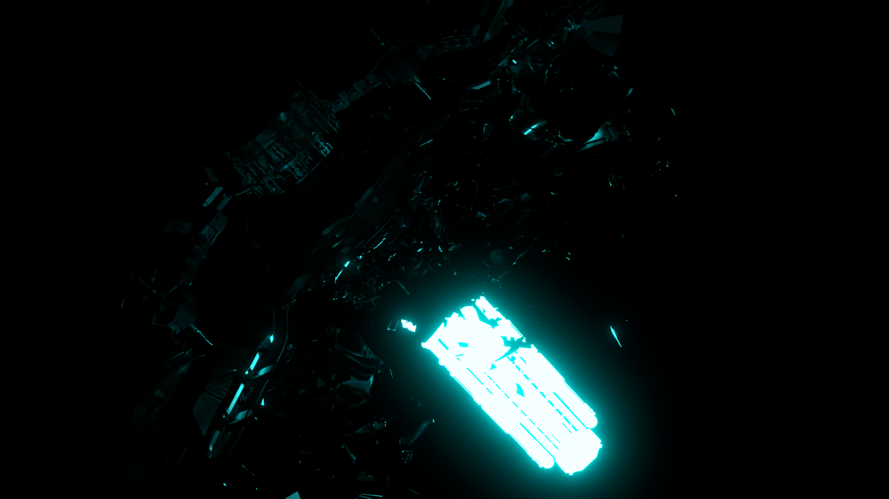
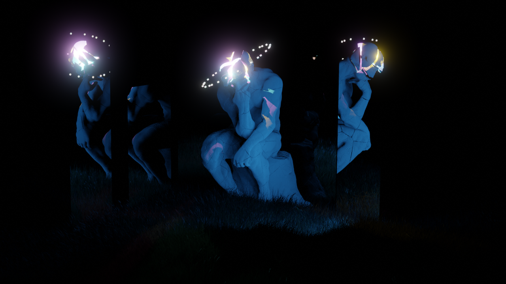

3D is my passion, I've been a self-taught artist and
designer for 10 years.
When I opened Blender for the first time 10 years ago I did not think I would ever get this far. It
all started on my parents
iMac Desktop, that was sophisticated enough to handle the load. I, like many other early Blender
students, combed
the internet in search of free models, tutorials, and other assets. I stumbled upon one tutorial that
caught my eye.
I decided that it wouldn't be too hard, and decided to stay up late that night to finish the project.
I immediately put my own spin on the elements that could easily be changed, and the potential came
flooding in.
Around two years of long nights and crashes later, I was a polished student.
My First Tutorial
My First Render
Full
Renders Collection
Since then I have been in constant pursuit of new knowledge of 3d and
its surrounding fields. I have been studying Computer Science, Psychology and Anthropology at the
University of British Columbia
since 2018, and in my private time studying various coding languages and developing my design
identity. I have a Discord and Instagram that I regularly share my work on - head over there
to see even more about me.


